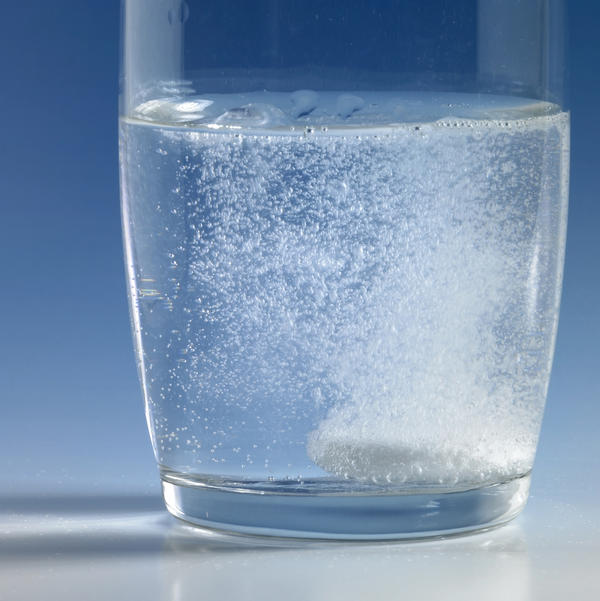

Galvaniese sel:'n sel waarin chemiese energie omgeskakel word na
elektriese energie.
Elektrolietiese sel:'n sel waarin elektriese energie omgeskakel word na chemiese energie.
Oksidasie:'n verlies aan elektrone. 'n toename in oksidasiegetal
Reduksie:'n wins aan elektrone. 'n afname in oksidasiegetal
Oksideermiddel:'n stof wat gereduseer word/elektrone opneem
Reduseermiddel:'n stof wat geoksideer word/elektrone verloor
Elektroliet:'n stof waarvan die oplossing in water ione bevat OF 'n stof wat in water oplos om 'n oplossing te vorm wat elektrisiteit gelei
Elektroliese:Die chemiese proses waarin elektriese energie omgeskakel word na chemiese energie OF die chemiese proses waarin elektriese energie gebruik word om 'n chemiese verandering te weeg te bring.
Elektrochemie handel oor chemiese reaksies waar of chemiese energie omgesit word in elektriese energie of elektriese energie omgesit word in chemiese energie.
VEO - Verlies aan Elektrone is Oksidasie
WER - Wins aan Elektrone is Reduksie
Nadat die reaksie plaasgevind het, sal die geoksideerde stof 'n hoër (meer positiewe of minder negatiewe) oksidasiegetal hê, en die gereduseerde stof 'n laer (minder positiewe of meer negatiewe) oksidasiegetal hê.
Oksidasie en reduksie vind altyd gelyktydig plaas.
Die Oksideermiddel word altyd gereduseer en die Reduseermiddel word altyd geoksideer.
Prosesse en Redoksreaksies in Galvaniese selle:
Die elektrodes (stafies) word die anode en katode genoem.
Anode:die elektrode waar oksidasie plaasvind en is negatief gelaai.
Katode:die elektrode waar reduksie plaasvind en is positief gelaai.
Die oplossings in beker asook die soutbrug staan bekend as elektroliete (die oplossings wat uit ione bestaan wat as ladingdraers kan optree)
Die funksie van die soutbrug by 'n galvaniese sel:
Om die stroombaan te voltooi.
Om die twee elektroliete te skei sodat hulle nie meng nie.
'n pad waardeur die ione kan beweeg om elektriese neutraliteit van die oplossings te verseker.
Beweging van ladings in 'n galvaniese sel:
Elektrone vloei deur 'n draad (eksterne stroombaan) vanaf die reduseermiddel na die oksideermiddel en ione beweeg deur die soutbrug (interne stroom) om die halfselle elektries neutraal te hou:
Laat Beweging van positiewe ione na die katode halfsel toe.
Laat Beweging van negatiewe ione na die anode halfsel toe.
Meting van standaard elektrodepotensiale:
Konsentrasie van alle oplossings moet 1 mol.dm¯³
Temperatuur van al die reagense in die halfselle moet gelyk wees aan 25℃ (298 K)
Druk van enige reagens wat asgas teenwoordig is, moet 1 atmosfeer (101,3 kPa) wees
Indien die betrokke halfsel nie 'n metaal as deel van die halfsel bevat nie, moet die onaktiewe edelmetaal, platinum, as eletrode gebruik word. Dus sal Pt nie geoksideer word nie want dit is 'n swak reduseermiddel.
As Eϴsel < 0 (negatief) is, is die reaksie nie spontaan.
As Eϴsel > 0 (positief) is, is die reaksie spontaan.
Voorspelling van spontaniteit deur van selpotensiaal gebruik te maak:
Redoksreaksies tussen sterk reduseer- en oksideermiddels = spontaan. Redoksreaksies tussen swak reduseer- en oksideermiddels = nie spontaan.
Bepaal watter stof as R.M kan optree en lees elektrodepotensiaal van stof af. Waarde is dan Eϴanode.
Bepaal watter stof as O.M. kan optree en lees die elektrodepotensiaal van stof af. Waarde is dan Eϴkatode.
Vervang waardes in die vergelyking: Eϴsel = Eϴkatode - Eϴanode.
Indien Eϴsel > 0 is die reaksie spontaan.
Indien Eϴsel < 0 is die reaksie niespontaan.
Faktore wat selpotensiaal beinvloed:
Die selpotensiaal (Eϴsel) van 'n galvaniese sel is van die volgende faktore afhanklik:
Die spesifieke reaksies wat by die anode plaasvind.
Konsentrasies van reaktante en produkte.
Temperatuur.
Faktore wat Stroom en reaksietempo beinvloed:
Konsentrasie van elektroliete: Die tempo waarteen die reaksie in die sel plaasvind word deur die Konsentrasie van die elektroliete beinvloed.
Interne weerstand van stroombaan word verlaag deur die [Konsentrasies] van die elektroliete te verhoog, insluitend die soutbrug en laat die tempo waarteen die ione vloei toeneem wat die stroom laat toeneem.
Reaksie tempo neem af soos die konsentrasie van die elektroliete afneem. Die elektrone vloei vanaf die anode na die katode. Tydens die verloop neem die [katode] af en die reaksietempo van die voorwaartse reaksie neem af en elektrone word teen
'n laer tempo vanuit die anode vrygestel. Die tempo waarteen die elektrode deur die eksterne stroombaan na die katode vloei neem af. Dus neem die stroom af.
Kontakoppervlakte van die elektrodes:
Area van elektrodes vergroot en verseker dat meer effektiewe botsings per eeheidstyd plaasvind. Meer elektrone vloei per eenheidstyd en die stroom neem toe.
Interne weerstand van die sel
Die stroom is indirek eweredig aan die interne weerstand, as die interne weerstand verlaag, verhoog die tempo waarteen elektrone vloei en die stroom neem toe.
Verskil tussen Elektrolitiese selle en Galvaniese selle:
Elektrolitiese selle:
Galvaniese selle:
Swak reduseermiddel & swak oksideermiddel.
Sterk reduseermiddel & sterk oksideermiddel.
Endotermies.
Eksotermies.
Anode: oksidasie: positief.
Anode: oksidasie: negatief.
Katode: reduksie: negatief.
Katode: reduksie: positief.
Gelykstroom kragbron (DC).
Twee aparte elektrodes + Soutbrug.
Elektroliese van water:
NaCl word in water gemeng
Die NaCl breek op in water
Die positiewe gelaaide Na, het 'n tekort aan elektrone en word getrek na die katode wat negatief gelaai is.
Waterstof, H is ook tekort aan elektrone en gaan na die katode om gereduseer te word (katode = reduksie) dit vorm 'n diatomiese binding: H₂(g) en ontsnap as Waterstofgas.
Cl, wat in oormaat van elektrone is (reduseermiddel) gaan na die anode toe (positief gelaai) om geoksideer te word. Dit vorm 'n diatomiese binding: Cl₂(g) en ontsnap as Chloorgas by anode (anode = oksidasie)
Suurstof is in oormaat van elektrone en gaan na die anode om geoksideer te word.
Suurstof, natrium en oortollige H vorm om Natrium Hidroksied te vorm (NaOH)
Sure en Basisse:
Arrhenius-teorie:
Arrhenius-suur:'n stof wat waterstofione (H+)/hidroniumione (H3O+) vorm wanneer dit in water oplos.
Arrhenius-basis:'n stof wat hidroksiedione (OH-) vorm wanneer dit in water oplos.
Lowry-Brønsted-teorie:
Suur:'n protonskenker (H+ -ioon-skenker).
Basis:'n proton-ontvanger (H+ -ioon-ontvanger).
Relatiewe sterktes van sure en basisse:
Sterk suur:Sterk sure ioniseer volledig in water om 'n hoë konsentrasie H3O + -ione te vorm. Voorbeelde van sterk sure is soutsuur, swawelsuur en salpetersuur.
Swak suur:Swak sure ioniseer onvolledig in water om 'n lae konsentrasie H3O+ -ione te vorm. Voorbeelde van swak sure is etanoësuur en oksaalsuur.
Sterk basis:Sterk basisse dissosieer volledig in water om 'n hoë konsentrasie OH- -ione te vorm. Voorbeelde van sterk basisse is natriumhidroksied en kaliumhidroksied.
Swak basis:Swak basisse dissosieer/ioniseer onvolledig in water om 'n lae konsentrasie OH- -ione te vorm. Voorbeelde van swak basisse is ammoniak, kalsiumkarbonaat kaliumkarbonaat, kalsiumkarbonaat en natriumwaterstofkarbonaat.
Gekonsentreerde sure/basisse en verdunde sure/basisse:
Gekonsentreerde sure/basisse bevat 'n groot hoeveelheid (getal mol) suur/basis in
verhouding met die volume water.
Verdunde sure/basisse bevat 'n klein hoeveelheid (getal mol) suur/basis in verhouding met die volume water.
Hidrolise:

Hidrolise:Die reaksie van 'n sout met water.
Hidrolise van die sout van 'n swak suur en 'n sterk basis vorm 'n alkaliese
oplossing, m.a.w. die pH > 7. Voorbeelde van sulke soute is natriumetanoaat,
natriumoksalaat en natriumkarbonaat.
Hidrolise van die sout van 'n sterk suur en 'n swak basis vorm 'n suuroplossing,
m.a.w. die pH < 7. 'n Voorbeeld van so ' n sout is ammoniumchloried.
Die sout van 'n sterk suur en 'n sterk basis ondergaan nie hidrolise nie en die
oplossing van die sout sal neutraal wees, m.a.w. pH = 7.
Suur-basis titrasie:
Ekwivalente punt van 'n titrasie:die punt waar die suur/basis volledig met die basis/suur gereageer het.
Eindpunt van 'n titrasie:die punt waar die indikator van kleur verander.
Die pH-skaal
pH-skaal:'n skaal met nommers van 0 tot 14 wat gebruik word om die suurheid of alkaliniteit van 'n oplossing uit te druk.
Kw:die ewewigskonstante vir die ionisasie van water of die ioonproduk van water of ionisasiekonstante van water, dus Kw = [H3O +][OH-] = 1 x 1014 by 298 K.
outo-ionisasie van water:die reaksie van water met water om H3O + -ione en OH- -ione te vorm.
Berekening van die pH-waardes van sterk sure en sterk basisse: